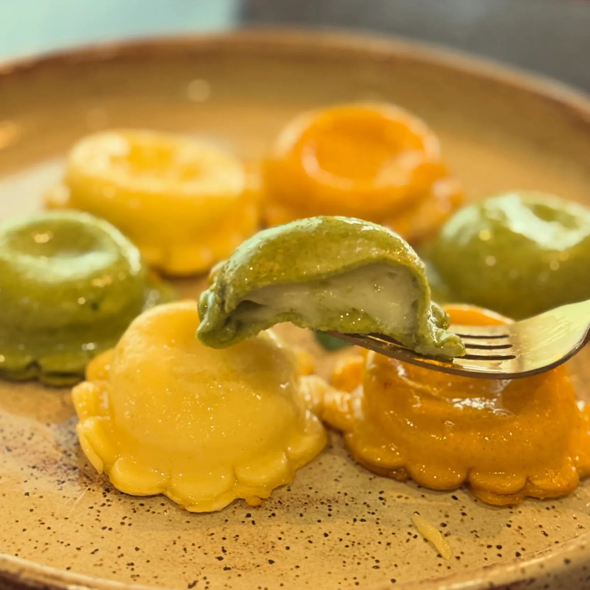
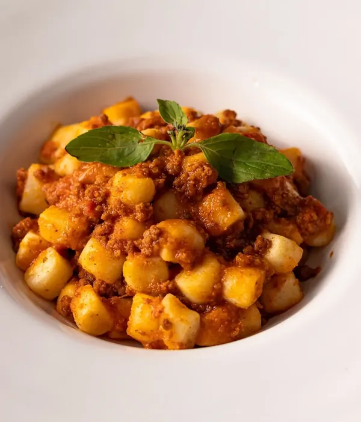
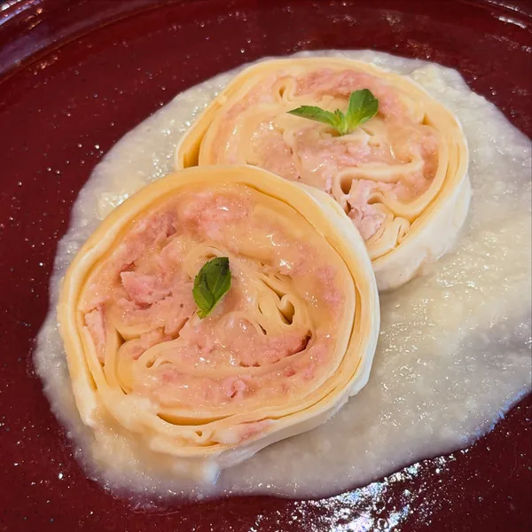
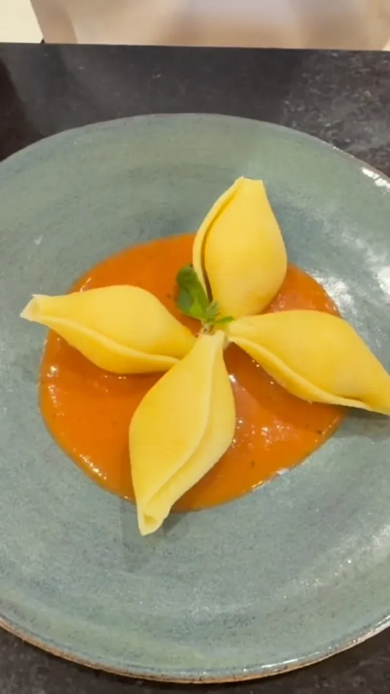
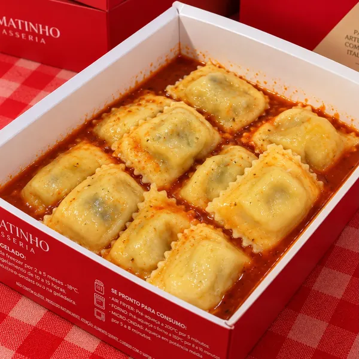
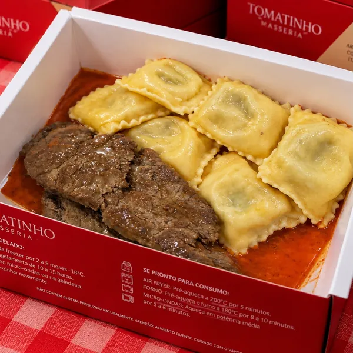
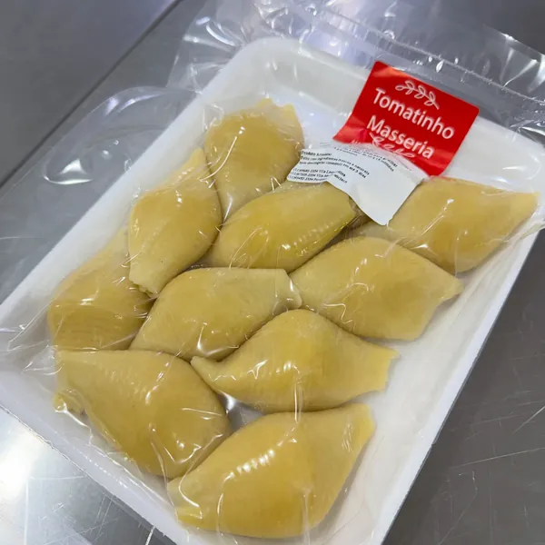
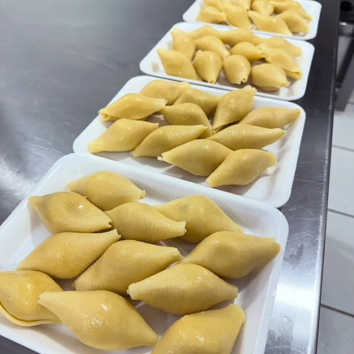
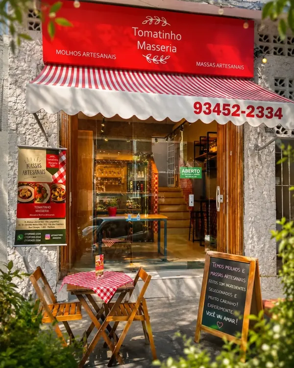

3 unidades em São Paulo
Massas e molhos artesanais, prontos para a sua mesa.
Ingredientes frescos e naturais, vendidos congelados. Peça pelo WhatsApp da unidade mais perto de você: entrega própria ou retirada na loja.
Vila Leopoldina · Cidade São Francisco · Perdizes
Ter a sex, 10h às 19h · sáb, 10h às 16h · dom, 10h às 14h

O que tem na vitrine
Massas frescas, recheios variados e molhos artesanais. Consulte disponibilidade e valores no WhatsApp da sua unidade.
Pedir agora-
Talharim e Spaghetti
Massa tradicional, pacote de 500 g.
-
Nhoque
Recheado de queijo, batata roxa, espinafre, tradicional ou de mandioquinha.
-
Rondelli
Brie com figo, damasco e nozes · caprese · presunto e queijo · quatro queijos.
-
Canelone
Presunto e queijo, entre outras opções.
-
Ravióli
Búfala com manjericão (branco ou verde) · caprese · brie com damasco · banana-da-terra com queijo meia cura · ricota, espinafre e nozes · shimeji na manteiga · mini ravióli de queijo, carne ou frango · piccollo ao limone.
-
Agnolotti
Abóbora cabotiá com queijo · caprese · e outros sabores.
-
Molhos artesanais
Para combinar com cada massa. Pergunte pelos sabores do dia no WhatsApp.
-
Carnes
Mini almôndegas · porpeta recheada de muçarela de búfala ao molho pomodoro · sobrecoxa desossada.
Da nossa cozinha, para a sua mesa
Pratos e caixas prontas, como chegam até você.
-

Nhoque Nhoque à bolonhesa -

Rondelli Rondelli de presunto e queijo -

Massa recheada Conchiglioni ao molho de tomate -

Pronto para consumo Ravióli com molho, na caixa -

Pronto para consumo Ravióli com carne, na caixa -

Massa fresca Embalada com a nossa etiqueta

Do freezer à mesa, sem complicação
Nossas massas e molhos são feitos com ingredientes frescos e naturais e vendidos congelados. Duram de 2 a 5 meses no freezer, e o passo a passo do preparo vem impresso na própria embalagem.
- Air fryer
- Forno
- Micro-ondas
Tempo e temperatura de cada opção estão na embalagem. Se ficar em dúvida, o time da loja explica pelo WhatsApp.

Atendimento de balcão, direto no seu WhatsApp
São três lojas na zona oeste de São Paulo. Você conversa direto com o time da unidade, sem app de delivery no meio.
- Massas e molhos artesanais, feitos com ingredientes frescos e naturais.
- Entrega própria ou retirada na loja, combinada pelo WhatsApp.
- Avaliação entre 4,9 e 5,0 no Google nas três unidades.
Quem já pediu, recomenda
Avaliações de clientes da unidade Cidade São Francisco no Google.
-
É uma delícia! Eu adorei! Tem muita opção de sabores e molhos. A porção é muito bem servida e o atendimento é ótimo.
Eidí Lima
Avaliação no Google -
A massa deles é maravilhosa, o molho é muito saboroso e o atendimento é incrível! Pode pedir sem medo. Amei a experiência!!
Juliana Feitosa
Avaliação no Google -
Foi excelente, o atendimento da Bianca foi tranquilo e esclarecedor. O ambiente claro e aconchegante. E a refeição saborosa.
Telma Cesar
Avaliação no Google
Escolha sua unidade e faça seu pedido
Cada unidade atende pelo próprio WhatsApp. Escolha a mais perto de você.
-
Vila Leopoldina
R. Aliança Liberal, 932
Vila Leopoldina, São Paulo - SP, 05088-000- Segunda
- Fechado
- Ter a sex
- 10h às 19h
- Sábado
- 10h às 16h
- Domingo
- 10h às 14h
-
Cidade São Francisco
Av. Dr. Cândido Motta Filho, 522
Cidade São Francisco, São Paulo - SP, 05351-000- Segunda
- Fechado
- Ter a sex
- 10h às 19h
- Sábado
- 10h às 16h
- Domingo
- 10h às 14h
-
Perdizes
Rua Cayowaá, 1005
Perdizes, São Paulo - SP, 05018-001- Seg a sex
- 10h às 19h
- Sábado
- 10h às 16h
- Domingo
- 10h às 14h
Acompanhe a masseria
Novidades, sabores e bastidores da produção no nosso Instagram.